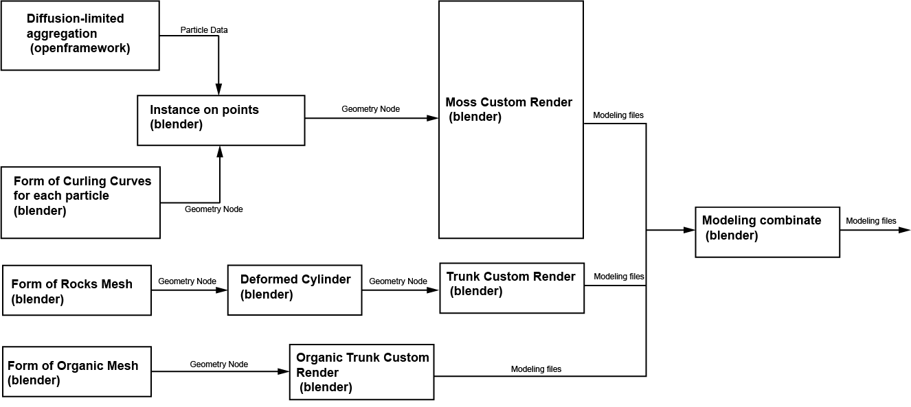
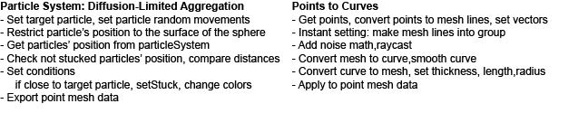
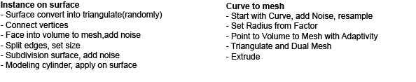

Introduction
Moss is virtual 3D artefacts that mimics the attachment of moss on biological items. It is a collection of simulation and recreation of natural ecological interdependence created with Diffusion-limited aggregation algorithm and geometry nodes.
Concept and Background Research
As a nature enthusiast, I always observe unusually shaped trees. I noticed that many trees have tumours of various sizes connected to their trunks. Although most of them have little effect on the tree's growth, the attachment relationship makes me question how such an ecosystem is built.
Nature's mystery and beauty are beyond description, and the rules of growth are tinted with unpredictability, displaying a mystical and dynamic. The project was inspired by these trees (p1/p2/p3), using the moss — lichen plant as a case study to try to simulate and explain this dependency in computational art way. Lichens, other people's clothing, are always growing on the surface of other items. Typically, Mosses, in their juvenile phases, often attach themselves to the surfaces of other things via wind, and then reproduce asexually, develop, and spread, producing a miniature ecosystem that lives in symbiosis with the dependents.
Pipeline
Pseudocode of Moss & Trunks
 References
- “Coding Challenge #34: Diffusion-Limited Aggregation.” n.d. Www.youtube.com. Accessed May 1, 2023. https://www.youtube.com/watch?v=Cl_Gjj80gPE.
- “Curling Curves with Geometry Nodes | Blender 3.1 Tutorial.” n.d. Www.youtube.com. Accessed May 1, 2023. https://www.youtube.com/watch?v=a_uaqvREsFw&t=360s.
- “LIVENODING Organic Mesh with Holes Using Geometry Nodes.” n.d. Www.youtube.com. Accessed May 1, 2023. https://www.youtube.com/watch?v=3StvubCgJ-k&t=936s.
- “Turning ANYTHING into Rocks - Blender Geometry Nodes.” n.d. Www.youtube.com. Accessed May 1, 2023. https://www.youtube.com/watch?v=QA13LPCZ3dM&t=844s.